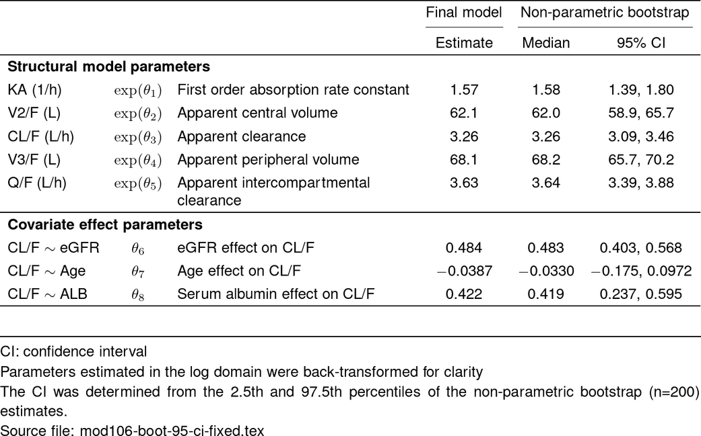
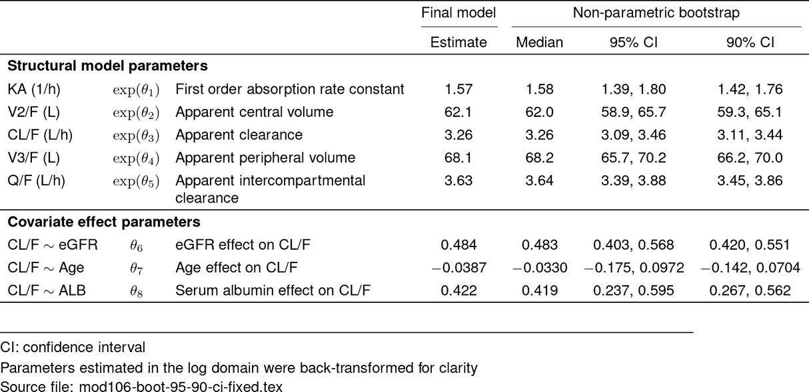

vignettes/making-bootstrap-parameter-tables.Rmd
making-bootstrap-parameter-tables.RmdThis is a vignette to help you become familiar with using
define_boot_table() and format_boot_table().
For more information how to effectively integrate pmparams
into your workflow, visit the
MeRGE Expo: Parameter Tables.
Before we get started, lets set some key variables we’ll use
throughout this tutorial, including the original bbr model
and the bootstrap run:
# Model Directory
model_dir <- system.file("model/nonmem", package = "pmparams")
# Parameter Key
param_key <- file.path(model_dir, "pk-parameter-key-new.yaml")
# Model we're bootstrapping
orig_mod <- bbr::read_model(file.path(model_dir, "106"))
# Bootstrap model object
boot_run <- bbr::read_model(file.path(model_dir, "106-boot"))We begin by creating a parameter key that tells R how to interpret your parameter values. Our code requires four arguments for each parameter:
If you have a model that uses theta in the $ERROR block, make sure
the theta panel label is “RV” so the pmparams functions can
properly identify it.
We recommend using a parameter key yaml, but pmparams
works for parameter key tibbles.
A more detailed walk-through of generating the parameter key is available here: MeRGE Expo: Creating a Parameter Key .
param_key_lst <- yaml::yaml.load_file(param_key)
head(unlist(param_key_lst))
#> THETA1.abb THETA1.desc
#> "KA (1/h)" "First order absorption rate constant"
#> THETA1.panel THETA1.trans
#> "struct" "logTrans"
#> THETA2.abb THETA2.desc
#> "V2/F (L)" "Apparent central volume"Parameter tables of bootstrap estimates are created by first passing
your bootstrap estimates to the pmparams
define_boot_table() function, which handles both the
joining and creation of new confidence interval related columns.
dplyr::inner_join, so only parameters
included in the model output and parameter key will be kept in
the table. This was done so that if your base and final model used the
same structural THETAs and random parameters, the same parameter key
could be used for both. The additional covariate THETAs defined in the
parameter key YAML would simply be ignored when creating the base model
parameter table.Bootstrap runs can be performed directly in bbr (version
1.11.0 or later), which tracks a bootstrap model object
(boot_run). Once executed, the
bbr::bootstrap_estimates() function can be used to easily
read those estimates into a data frame that you can subsequently pass to
the pmparams define_boot_table() function.
To support use cases outside of bbr, this function
allows you to pass in those bootstrap estimates in a couple of
formats:
file.path(model_dir, "boot/data/boot-106.csv"))bbr::bootstrap_estimates())
# Also accepted
# boot_ests <- file.path(model_dir, "boot/data/boot-106.csv")
# boot_ests <- readr::read_csv(file.path(model_dir, "boot/data/boot-106.csv"))
boot_ests <- bbr::bootstrap_estimates(boot_run)
boot_df <- define_boot_table(
.boot_estimates = boot_ests,
.key = param_key
)
head(boot_df)
#> # A tibble: 6 × 23
#> parameter_names lower value upper ci_level name abb desc panel trans
#> <chr> <dbl> <dbl> <dbl> <dbl> <chr> <chr> <chr> <chr> <chr>
#> 1 THETA1 1.39 1.58 1.80 95 THETA1 KA (1/… Firs… stru… logT…
#> 2 THETA2 58.9 62.0 65.7 95 THETA2 V2/F (… Appa… stru… logT…
#> 3 THETA3 3.09 3.26 3.46 95 THETA3 CL/F (… Appa… stru… logT…
#> 4 THETA4 65.7 68.2 70.2 95 THETA4 V3/F (… Appa… stru… logT…
#> 5 THETA5 3.39 3.64 3.88 95 THETA5 Q/F (L… Appa… stru… logT…
#> 6 THETA6 0.403 0.483 0.568 95 THETA6 CL/F ~… eGFR… cov none
#> # ℹ 13 more variables: transTHETA <lgl>, THETAERR <lgl>, TH <lgl>, OM <lgl>,
#> # S <lgl>, LOG <lgl>, LOGIT <lgl>, lognormO <lgl>, Osd <lgl>, logitOsd <lgl>,
#> # propErr <lgl>, addErr <lgl>, addErrLogDV <lgl>Now we perform some house-keeping based on the new parameter key
information and format the values for the report using
format_boot_table().
boot_df <- format_boot_table(boot_df)
head(boot_df)
#> # A tibble: 6 × 4
#> abb desc boot_value boot_ci_95
#> <chr> <chr> <chr> <chr>
#> 1 KA (1/h) First order absorption rate constant 1.58 1.39, 1.80
#> 2 V2/F (L) Apparent central volume 62.0 58.9, 65.7
#> 3 CL/F (L/h) Apparent clearance 3.26 3.09, 3.46
#> 4 V3/F (L) Apparent peripheral volume 68.2 65.7, 70.2
#> 5 Q/F (L/h) Apparent intercompartmental clearance 3.64 3.39, 3.88
#> 6 CL/F ~ eGFR eGFR effect on CL/F 0.483 0.403, 0.568Start by creating a parameter table for your original model,
and then join it to the formatted bootstrap table (boot_df)
we created above:
param_df <- orig_mod %>%
define_param_table(param_key, .ci = 95) %>%
format_param_table()
boot_param_df <- left_join(param_df, boot_df, by = c("abb", "desc"))
head(boot_param_df)
#> # A tibble: 6 × 9
#> type abb greek desc value shrinkage ci_95 boot_value boot_ci_95
#> <chr> <chr> <glu> <chr> <glu> <chr> <chr> <chr> <chr>
#> 1 Structural mode… KA (… $\ex… Firs… 1.57 - 1.38… 1.58 1.39, 1.80
#> 2 Structural mode… V2/F… $\ex… Appa… 62.1 - 58.8… 62.0 58.9, 65.7
#> 3 Structural mode… CL/F… $\ex… Appa… 3.26 - 3.08… 3.26 3.09, 3.46
#> 4 Structural mode… V3/F… $\ex… Appa… 68.1 - 65.6… 68.2 65.7, 70.2
#> 5 Structural mode… Q/F … $\ex… Appa… 3.63 - 3.39… 3.64 3.39, 3.88
#> 6 Covariate effec… CL/F… $\th… eGFR… 0.484 - 0.40… 0.483 0.403, 0.…
# Define bootstrap CI footnote
footBoot <- boot_notes(.ci = 95, .n_run = nrow(boot_ests))
# Render table
tab <- boot_param_df %>%
make_boot_pmtable(.pmtype = "fixed") %>%
st_center(desc = col_ragged(5.5), abb = "l") %>%
st_notes(param_notes()$ci) %>% # add abbreviations
st_notes_str() %>% # collapse all abbreviations to a string
st_notes(param_notes()$logTrans, footBoot$boot_ci) %>% # customize other notes
st_notes_detach(width = 1) %>%
st_files(output = "final-param-fixed-boot.tex") %>%
stable(output_file = "deliv/mod106-boot-95-ci-fixed.tex")
tab_out <- stable_save_image(tab, format = "png")
st_image_show(tab_out, width = 0.8)
To illustrate the flexibility of make_boot_pmtable(),
we’ll use a more complex example where we include two confidence
intervals:
# Two confidence intervals
boot_df <- boot_ests %>%
define_boot_table(param_key, .ci = 95) %>%
format_boot_table()
boot_df2 <- boot_ests %>%
define_boot_table(param_key, .ci = 90) %>%
format_boot_table()
boot_param_df <- param_df %>%
left_join(boot_df) %>%
left_join(boot_df2)
tab <- boot_param_df %>%
make_boot_pmtable(.pmtype = "fixed") %>%
st_center(desc = col_ragged(5.5), abb = "l") %>%
st_notes(param_notes()$ci) %>% # add abbreviations
st_notes_str() %>% # collapse all abbreviations to a string
st_notes(param_notes()$logTrans) %>% # customize other notes
st_notes_detach(width = 1) %>%
st_files(output = "final-param-fixed-boot-multi-ci.tex") %>%
stable(output_file = "deliv/mod106-boot-95-90-ci-fixed.tex")
tab_out <- stable_save_image(tab, format = "png")
st_image_show(tab_out, width = 0.8)